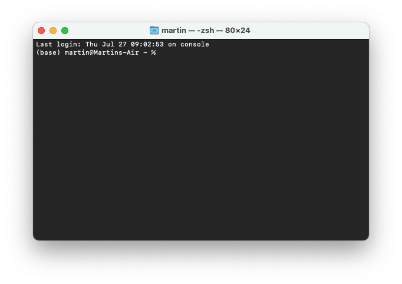
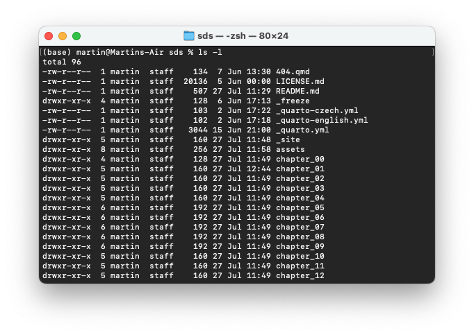

1 + 12Welcome to the first hands-on section of the course. You will familiarise yourself with the tools you will be using, ensure that all works as it should, and prepare for some Python code.
Before you start, ensure you have carefully read and followed the instructions outlined in the Infrastructure section and have a working installation of Python and some Jupyter Notebook IDE, either via Jupyter Lab (recommended) or on Google Colab.
Spatial Data Science depends on code, and coding environments can be unfriendly to an average user. People designing the tools are often computer scientists or have a strong knowledge of CS-related environments. It means we sometimes need to deal with the tools that look a bit scary, like a Terminal or a Command line. Below is a brief introduction to the tools you will need for this course.
Depending on your operating system, you will have either Terminal (macOS, Linux) or Command line application installed. It will look like this:

Terminal (and Command line, but we will refer to both as the terminal for simplicity) is used to interact with applications that do not have any graphic interface or with the apps that do have one, but you want to use them programmatically. The terminal usage is straightforward. Let’s start with a few examples.
You want to see a list of files and folders for this course. First, you need to navigate to the correct folder. For that, you can use the cd command, which stands for current directory.
cd university/sds/Let’s assume that you have the folder with course material in the folder called sds in another folder called university. The full command is then composed of the cd part, saying set the current directory to… and waits for the parameter, which is a path to the folder in this case - university/sds/.
Once in the correct folder, you can use another command, ls, which stands for list and allows you to list the contents of the current directory.
lsThe output would look like this:

ls command.You can also pass a parameter -l, specifying that you want a long listing including attributes.
ls -lThat changes the output to this:

ls -l command.The syntax is always the same, starting with the app name and then followed by parameters.
If you followed the installation of Python described in the infrastructure section, you have used mamba app, with parameters specifying that you want to use it to create an environment based on an environment.yml file. But what is mamba?
Mamba, and its predecessor, conda, are tools you will use to create “environments” and install Python and Python packages. It is a package manager, ensuring all the necessary parts work together. For example, if you want to create a new environment and install Python in it, you type the following command in your terminal.
mamba create -n my_environment pythonYou can check more in the documentation of mamba.
Mamba is not the only way of doing this. If you don’t want to install anything on your local machine, you can use Google Colab, which gives you an environment with Python and an interface to work with Jupyter Notebooks. To use it, refer to the Colab section of the infrastructure documentation for differences. TODO
While you can interact with Python from the terminal, it is inconvenient. Instead, we will use Jypyter Notebooks and Jupyter Lab. Jupyter Notebooks are documents that allow you to mix text and code, execute small pieces of code one at a time and include graphical outputs of your code. Jupyter Lab is a handy interface allowing you to work with multiple notebooks and switch between your Python environments created with mamba.
It is time to say goodbye to the terminal and start Jupyter Lab. You should ensure you have your sds environment activated first:
mamba activate sdsThen you can start Lab using:
jupyter labThis command should open your browser and load the Jupyter Lab interface.

In the launcher, we can create a new Notebook by clicking on the Python logo representing our current environment. If you have more of them, you will see them there, as well as other environments using different programming languages like R or Julia.
The notebook is composed of cells. This is a cell:

Cells can contain either code or text. A typical notebook is then a series of cells where some include text describing what is happening while others contain the code, either waiting for execution or already executed. The cells with the executed code may also contain outputs.
We can start with simple math that Python can do natively. Run the following code cell. To do that, you can either click the “play” button on top or hit Shift + Enter:
1 + 12You now have a code cell with the output. Jupyter Lab automatically created a new cell. Change its type to Markdown and write a short text describing what the cell above does.
You can start exploring Python.
As shown above, Python can be used as a simple calculator. Remember, you can press Shift + Enter to execute the code in the cells below. Try it out by typing some simple math into new cells and see what you get.
42 * 1250412 / 34.0If you want to edit and re-run some code, change the cell and press Shift + Enter to execute the modified code.
You can use Python for more advanced math by using a function. Functions are pieces of code that perform a single action, such as printing information to the screen (e.g., the print() function). Functions exist for a huge number of operations in Python.
Let’s try out a few simple examples using functions to find the sine or square root of a value. You can type sin(3) or sqrt(4) into the cells below to test this out.
sin(3)NameError: name 'sin' is not definedsqrt(4)NameError: name 'sqrt' is not definedWell, that didn’t work. Python can calculate square roots or do basic trigonometry, but we need one more step.
The table below shows the list of basic arithmetic operations that can be done by default in Python.
| Operation | Symbol | Example syntax | Returned value |
|---|---|---|---|
| Addition | + |
2 + 2 |
4 |
| Subtraction | - |
4 - 2 |
2 |
| Multiplication | * |
2 * 3 |
6 |
| Division | / |
4 / 2 |
2 |
| Exponentiation | ** |
2 ** 3 |
8 |
For anything more advanced, we need to load a module or a package. For math operations, this module is called math and can be loaded by typing import math.
import mathNow that we have access to functions in the math module, we can use it by typing the module name, a period (dot), and the name of the function we want to use. For example, math.sin(3). Try this with the sine and square root examples from above.
math.sin(3)0.1411200080598672math.sqrt(4)2.0Let’s summarise what you’ve just done with modules:
A module is a group of code items, such as functions, related to one another. Individual modules are often in a group called a package.
Modules can be loaded using import. Functions that are part of the module modulename can then be used by typing modulename.functionname(). For example, sin() is a function that is part of the math module and is used by typing math.sin() with some number between the parentheses.
Within a Jupyter Notebook, the variables you defined earlier in the notebook will be available for use in the following cells as long as you have executed the cells.
Modules may also contain constants such as math.pi (notice no parentheses at the end). Type this in the cell below to see the constant’s math.pi value.
math.pi3.141592653589793Use the empty Python cell to calculate the sine of pi. What value do you expect for this calculation? Did you get the desired result?
# Here is an example solution
math.sin(math.pi)Functions can also be combined. The print() function returns values within the parentheses as text on the screen. Below, try printing the value of the square root of four.
print(math.sqrt(4))2.0You can also combine text with other calculated values using the print() function. For example, print('Two plus two is', 2+2) would generate the text reading 'Two plus two is 4'. Combine the print() function with the math.sqrt() function in the cell below to produce text that reads 'The square root of 4 is 2.0'.
print("The square root of 4 is", math.sqrt(4))The square root of 4 is 2.0A variable can store values calculated in expressions and used for other calculations. Assigning value to variables is straightforward. To assign a value, you type variable_name = value, where variable_name is the name of the variable you wish to define. In the cell below, define a variable called temp_celsius, assign it a value of 10.0, and then print that variable value using the print() function. Note that you should do this on two separate lines.
temp_celsius = 10.0
print(temp_celsius)10.0As we did above, you can combine text and even use some math when printing out variable values. The idea is similar to adding 2+2 or calculating the square root of four from the previous section. In the cell below, print out the value of temp_celsius in degrees Fahrenheit by multiplying temp_celsius by 9/5 and adding 32. This should be done within the print() function to produce output that reads 'Temperature in Fahrenheit: 50.0'.
print("Temperature in Fahrenheit:", 9 / 5 * temp_celsius + 32)Temperature in Fahrenheit: 50.0Use the empty Python cell below to define a variable and print its value to the screen using the print() function. The variable value can be anything you like, and you can even consider defining several variables and printing them out together. Consider using pothole_case_naming for your variable name.
# Here is an example solution
part1 = "I like"
part2 = "Python!"
print(part1, part2)Values stored in variables can also be updated. Let’s redefine the value of temp_celsius to be equal to 15.0 and print its value in the cells below.
temp_celsius = 15.0print("temperature in Celsius is now:", temp_celsius)temperature in Celsius is now: 15.0If you try to run some code that accesses a variable that has not yet been defined, you will get a NameError message. Try printing out the value of the variable temp_fahrenheit using the print() function in the cell below.
print("Temperature in Celsius:", 5 / 9 * (temp_fahrenheit - 32))NameError: name 'temp_fahrenheit' is not definedOne of the interesting things here is that if we define the undefined variable in a cell lower down in the notebook and execute that cell, we can return to the earlier cell, and the code should now work. That was a bit of a complicated sentence, so let’s test this all out. First, let’s define a variable called temp_fahrenheit in the cell below and assign it to be equal to 9/5 * temp_celsius + 32, the conversion factor from temperatures in Celsius to Fahrenheit. Then, return to the cell above this text and run that cell again. See how the error message has gone away? temp_fahrenheit has now been defined, and thus, the cell above no longer generates a NameError when the code is executed.
Also, the number beside the cell, for example, In [2], tells you the order in which the Python cells have been executed. This way, you can see a history of the order in which you have run the cells.
temp_fahrenheit = 9 / 5 * temp_celsius + 32To check their current values, print out the values of temp_celsius and temp_fahrenheit in the cell below.
print("temperature in Celsius:", temp_celsius, "and in Fahrenheit:", temp_fahrenheit)temperature in Celsius: 15.0 and in Fahrenheit: 59.0A data type determines the characteristics of data in a program. There are four basic data types in Python, as shown in the table below.
| Data type name | Data type | Example |
|---|---|---|
int |
Whole integer values | 4 |
float |
Decimal values | 3.1415 |
str |
Character strings | 'Hot' |
bool |
True/false values | True |
The data type can be found using the type() function. As you will see, the data types are essential because some are incompatible.
Let’s define a variable weather_forecast and assign it the value 'Hot'. After this, we can check its data type using the type() function.
weather_forecast = "Hot"
type(weather_forecast)strLet’s also check the type of temp_fahrenheit. What happens if you try to combine temp_fahrenheit and weather_forecast in a single math equation such as temp_fahrenheit = temp_fahrenheit + 5.0 * weather_forecast?
type(temp_fahrenheit)floattemp_fahrenheit = temp_fahrenheit + 5.0 * weather_forecastTypeError: can't multiply sequence by non-int of type 'float'In this case, we get at TypeError because we are trying to execute a math operation with data types that are not compatible. There is no way in Python to multiply numbers with a character string.
As it turns out, you can do some math with character strings in Python. Define two variables and assign them character string values in the Python cell below. What happens if you try to add two character strings together? Can you subtract them? Which other math operations work for character strings?
# Here is an example solution
first_variable = "Python"
second_variable = " is cool!"
print(first_variable + second_variable)
print(5 * first_variable)
print(first_variable - second_variable)